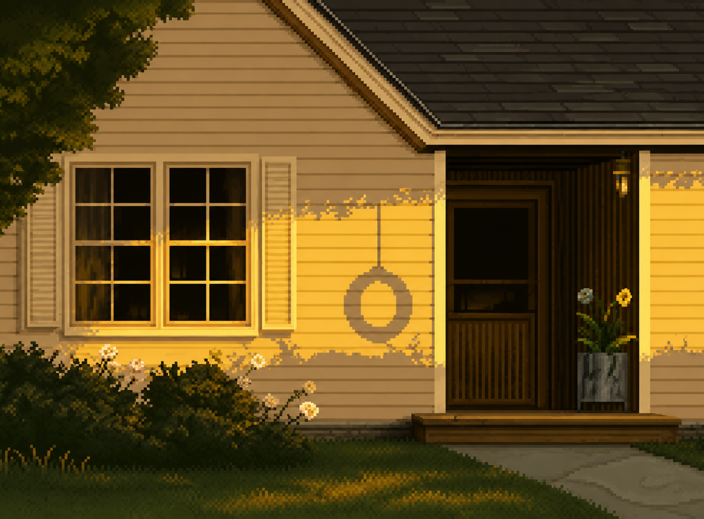
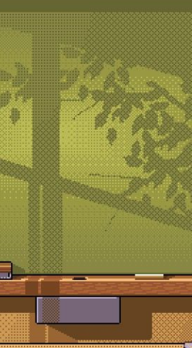
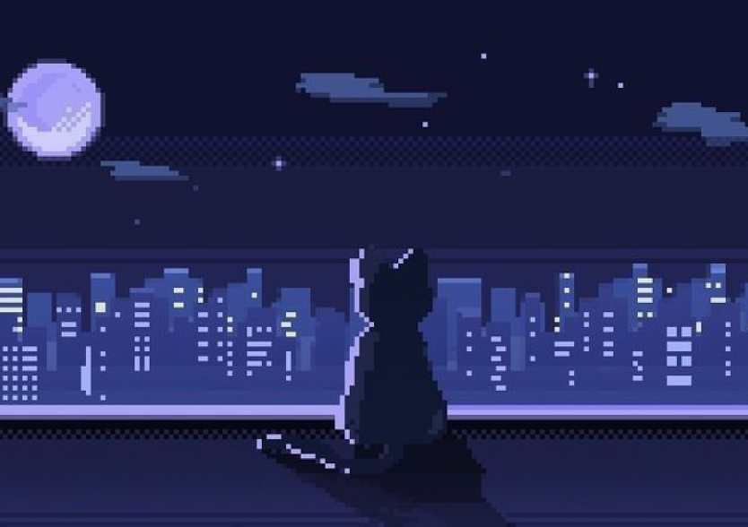
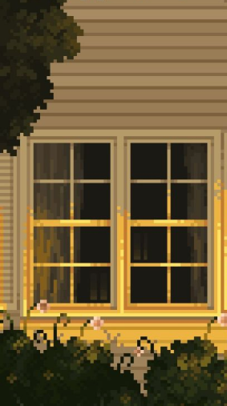
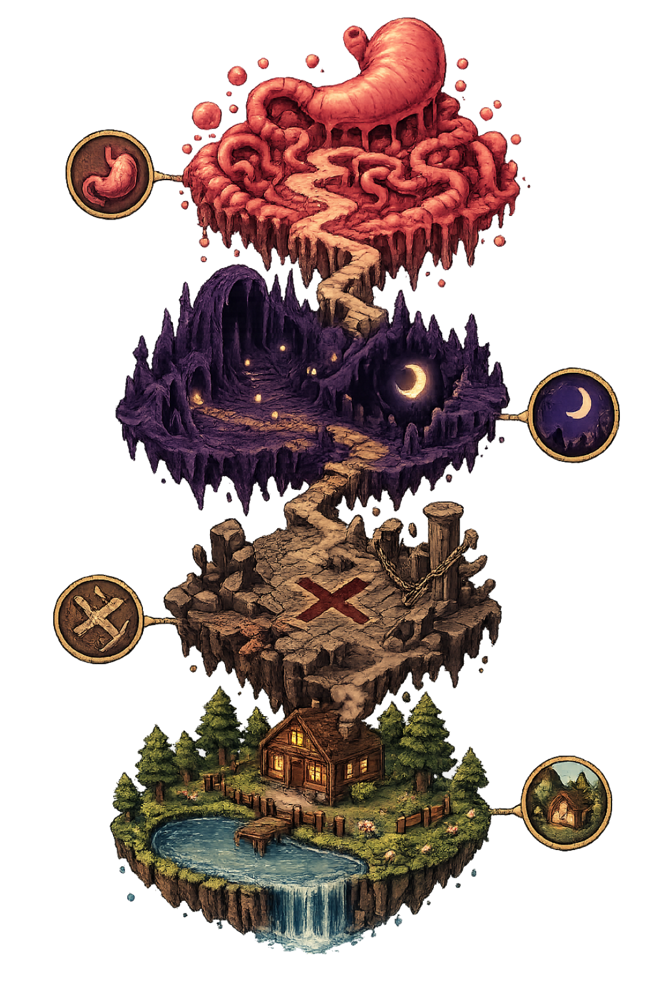

Psybot
Vídeos
Sobre
Tratamento para a ansiedade. Pesadelo dentro da mente.
Uma nova intervenção neural experimental leva um nanorrobô ao interior do corpo de Pedro, um garoto afetado por ansiedade severa. Explore cenários inspirados em medos e memórias distorcidas, sobreviva a manifestações psicológicas hostis e enfrente entidades simbólicas em um metroidvania 2D focado em atmosfera, exploração e combate estilizado.
História
Após ser diagnosticado com ansiedade severa, Pedro é submetido a um tratamento neural experimental com um nanorrobô microscópico capaz de percorrer o corpo humano e identificar anomalias cerebrais associadas a traumas e medos profundos. Ao alcançar o cérebro do garoto, a máquina encontra memórias distorcidas transformadas em ambientes hostis e entidades grotescas.
Enquanto explora manifestações ligadas ao medo do escuro, ao fracasso e ao luto, o nanorrobô deve eliminar as anomalias responsáveis por intensificar o sofrimento psicológico de Pedro, atravessando uma mente onde os limites entre tratamento e pesadelo começam a desaparecer.



Fases
As fases de Psybot representam manifestações simbólicas dos medos e traumas de Pedro. Após um breve tutorial no sistema digestório, o jogador explora ambientes distorcidos inspirados no medo do escuro, na pressão pelo fracasso e no luto, cada um com atmosfera, mecânicas e entidades próprias que refletem diretamente o estado psicológico do garoto.

Fase 1 Fase 2 Fase 3 Fase 4